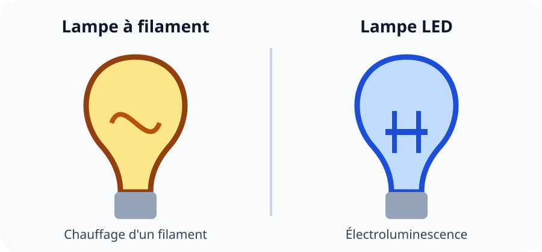

🌧️ Situation déclenchante
À Sainte-Luce, un collège souhaite équiper ses vélos de prêt. Les trajets comprennent des descentes, de la pluie et des routes parfois salées par les embruns. Deux fournisseurs proposent des systèmes de freinage différents : frein à patins et frein à disque.
Comment comparer plusieurs principes techniques réalisant la même fonction afin de choisir la solution la plus adaptée ?
Activité 1 🔎 Distinguer fonction et principe
Consigne : pour chaque objet, formule la fonction technique puis décris le principe employé.

| Objet | Fonction : à quoi sert-il ? | Principe : comment agit-il ? |
|---|---|---|
| Frein à patins | … | … |
| Frein à disque | … | … |
| Lampe LED | … | … |
Production attendue : un tableau complété avec une fonction formulée par un verbe à l’infinitif et un principe décrit par une action physique.
💡 Aide
La fonction répond à « À quoi cela sert-il ? ». Le principe répond à « Par quel phénomène ou mécanisme la fonction est-elle réalisée ? ».
✅ Correction détaillée
Les deux freins ont la même fonction : ralentir ou arrêter le vélo. Le frein à patins serre la jante par frottement ; le frein à disque serre un disque fixé à la roue. La lampe LED et la lampe à filament ont la même fonction : éclairer, mais la LED produit la lumière par électroluminescence alors que le filament chauffe jusqu’à devenir lumineux.
Erreur fréquente : écrire une marque ou un matériau comme principe. « Aluminium » n’est pas un principe ; « serrer un disque par frottement » en est un.
Activité 2 ⚖️ Comparer avec des critères
Consigne : utilise les données suivantes pour comparer les deux systèmes de freinage. Attribue une note de 1 à 3 à chaque critère, puis justifie.
| Critère | Frein à patins | Frein à disque |
|---|---|---|
| Efficacité sous la pluie | Moyenne | Bonne |
| Entretien | Simple et peu coûteux | Plus technique |
| Masse | Faible | Plus élevée |
| Prix | Faible | Plus élevé |
| Résistance aux longues descentes | Moyenne | Bonne |
Production attendue : une matrice de comparaison et deux phrases de justification utilisant « parce que ».
💡 Aide
Un choix technique n’est pas « meilleur dans l’absolu ». Il dépend du contexte et des critères prioritaires.
✅ Exemple de correction
Pour un vélo urbain peu utilisé et entretenu facilement, le frein à patins peut être retenu car il est léger, simple et économique. Pour des descentes sous la pluie, le frein à disque est préférable car son efficacité reste meilleure et il résiste mieux aux échauffements prolongés.
Erreur fréquente : choisir uniquement selon le prix sans considérer l’usage, la sécurité et l’entretien.
Activité 3 🛠️ Choisir pour un contexte martiniquais
Consigne : rédige une recommandation pour les vélos du collège. Ta réponse doit citer le contexte, au moins trois critères et une limite de la solution retenue.
Scénario : trajets quotidiens, fortes pluies possibles, descentes, air salin, budget d’entretien limité.
💡 Trame de rédaction
« Nous recommandons… car… Les critères prioritaires sont… Cependant… Pour limiter cet inconvénient, le collège pourrait… »
✅ Correction possible
Nous recommandons le frein à disque, car les vélos doivent rester efficaces sous la pluie et dans les descentes. Les critères prioritaires sont la sécurité, l’efficacité humide et la résistance à l’échauffement. Cette solution coûte davantage et demande un entretien plus technique. Le collège peut limiter cet inconvénient en prévoyant une vérification annuelle et un rinçage après exposition importante aux embruns.
À retenir : une même fonction peut être réalisée par plusieurs principes. Le choix repose sur des critères mesurables reliés à l’usage réel.
🧩 Bilan
Fonction technique : action attendue d’une partie de l’objet. Principe technique : phénomène, mécanisme ou procédé utilisé pour réaliser cette fonction. Comparer : utiliser plusieurs critères et justifier un choix adapté au contexte.
🧠 Prêt·e à t’entraîner ?
24 questions sur la compétence 5e_C1.2, dont plusieurs situations illustrées pour distinguer fonction, principe et critère de choix.
🚀 Ouvrir le QCM d’entraînement🎁 Bonus (facultatif — hors parcours obligatoire)
- Défi citoyen : proposer un critère environnemental pour comparer deux solutions techniques.
- Défi technique : trouver deux principes différents pour ouvrir automatiquement une porte.
- Défi Martinique : expliquer comment humidité, chaleur et embruns peuvent modifier le choix d’un principe technique.
Ces défis ne comptent pas dans la progression obligatoire et aucun élève n’est pénalisé de ne pas les réaliser.